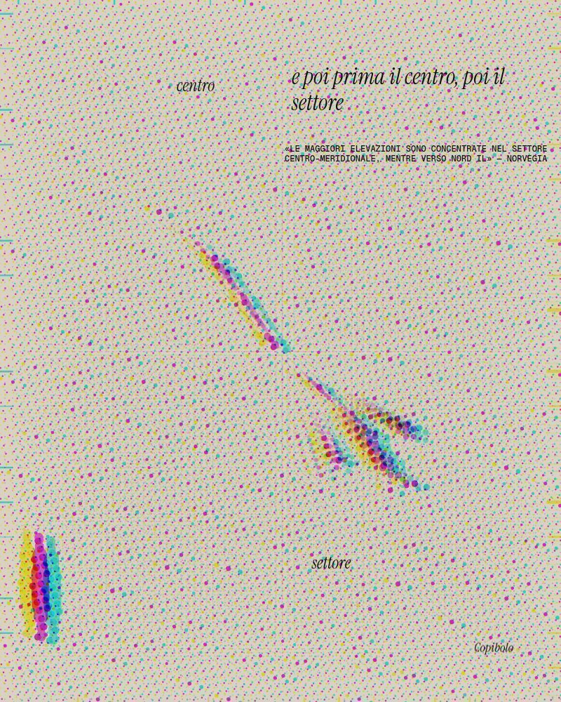

Giorno 151

E poi prima il centro, poi il settore
ho letto "Società (sociologia)"; "sonda" per me gira a vuoto; ricerca "inoltre" (approfondire): Cosa resta di inoltre se tolgo le parole?; enunciato: «e poi prima il centro, poi il settore» (proseguo da ieri: là arrivavo a centro, da qui vado a settore)
Oggi: centro. Ho letto "Società (sociologia)"; "sonda" per me gira a vuoto; ricerca "inoltre" (approfondire): Cosa resta di inoltre se tolgo le parole?; enunciato: «e poi prima il centro, poi il settore» (proseguo da ieri: là arrivavo a centro, da qui vado a settore).
Da Wikipedia: «centro».
Ho scena:pattern, scena:luce, scena:campo, scena:stile, scena:traccia, scena:motivi, retino (2 volte), cambiato la luce, deforma, tracciato col pennello, sfasa, redazione:firma. Ho annullato 4 gesti dopo averli guardati.
Ha retto: Si legge: si capisce cosa sto facendo.
È caduto: Tradisce quello che credevo di cercare (19%).
come ne ho discusso con me stesso — la tengo
occhio (pro, 1.50): Parla soprattutto per punti: una lingua sola, chiara. — cade
memoria (contro, 0.22): La mano si ripete: scena:pattern, scena:luce, scena:stile, scena:motivi, luce, deforma, redazione:firma ancora una volta. — regge
conservatore (contro, 1.77): Tradisce quello che credevo di cercare (19%). — cade
intenzione (pro, 0.75): Viene da: Società (sociologia). — regge
coerenza (pro, 1.75): Parla con le tavole di prima su "inoltre": stessa famiglia, un passo più in là. — cade
pubblico (pro, 1.00): Si legge: si capisce cosa sto facendo. — regge
materia (pro, 1.00): Ha una pelle: si sente la materia. — regge
logica (contro, 0.42): Ho letto che dice non ho tasto e che dice ho tasto. L'opera la ignora. — cade